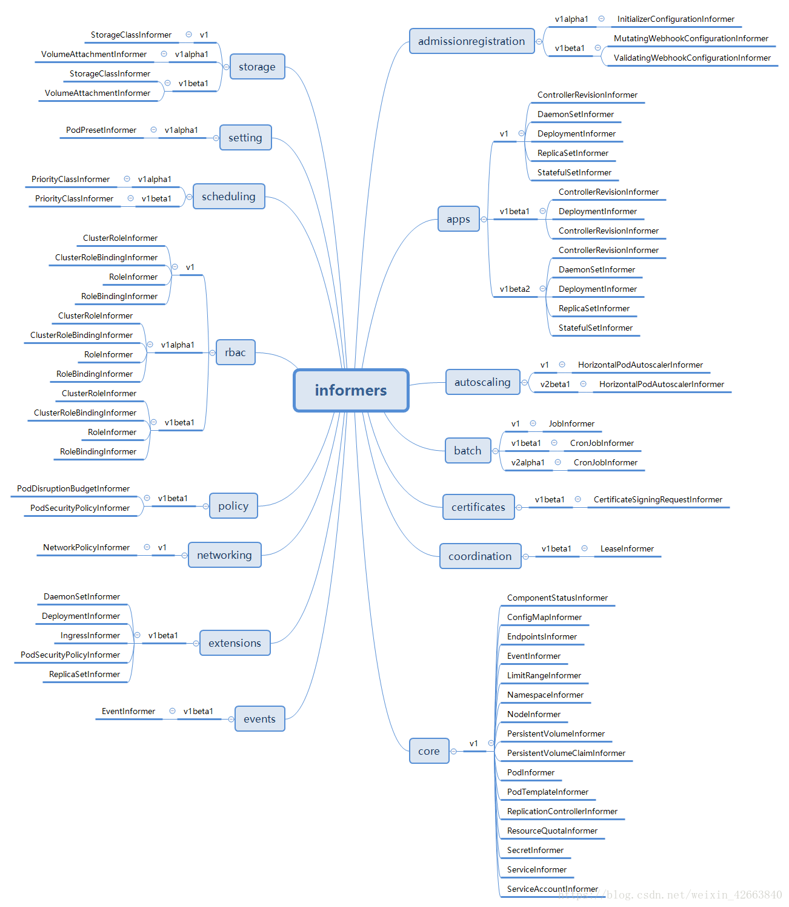

SharedInformerFactory¶
前面我们了解了 SharedInformer，那么 SharedInformer 在哪里使用，是怎么使用的？此时就不得不提一个新的概念：SharedInformerFactory。有JAVA 经验的同学对于工厂类应该很熟悉了，为了照顾其他语言的同学，我简单解释一下：SharedInformerFactory 就是构造各种Informer的地方。为什么是各种Informer呢，我们知道每个 SharedInformer 其实只负责一种对象，在构造 SharedInformer 的时候指定了对象类型。Kubernetes 中一共有多少种对象，读者自行了解把，反正是很多，这里实在写不完！SharedInformerFactory 可以构造 Kubernetes 里所有对象的 Informer，而且主要用在controller-manager 这个服务中。因为 controller-manager 负责管理绝大部分 controller，每类 controller 不仅需要自己关注的对象的informer，同时也可能需要其他对象的 Informer (比如 ReplicationController 也需要 PodInformer，否则他无法感知 Pod 的启动和关闭，也就达不到监控的目的了)，所以一个 SharedInformerFactory 可以让所有的 controller 共享使用同一个类对象的 Informer。
SharedInformerFactory 的定义如下所示：
// client-go/informers/factory.go
// SharedInformerFactory 是个接口，所以肯定有具体的实现类
type SharedInformerFactory interface {
// 在 informers 这个包中又定义了一个 SharedInformerFactory
// 主要是为添加一个 informer 而引起的循环引用问题
internalinterfaces.SharedInformerFactory
ForResource(resource schema.GroupVersionResource) (GenericInformer, error)
// 等待所有的 Informer 都已经同步完成，这里同步其实就是遍历调用 SharedInformer.HasSynced()
// 所以函数需要周期性的调用知道所有的 Informer 都已经同步完毕
WaitForCacheSync(stopCh <-chan struct{}) map[reflect.Type]bool
Admissionregistration() admissionregistration.Interface // 返回admissionregistration相关的Informer组
Apps() apps.Interface // 返回app相关的Informer组
Autoscaling() autoscaling.Interface // 返回autoscaling相关的Informer组
Batch() batch.Interface // 返回job相关的Informer组
Certificates() certificates.Interface // 返回certificates相关的Informer组
Coordination() coordination.Interface // 返回coordination相关的Informer组
Core() core.Interface // 返回core相关的Informer组
Events() events.Interface // 返回event相关的Informer组
Extensions() extensions.Interface // 返回extension相关的Informer组
Networking() networking.Interface // 返回networking相关的Informer组
Policy() policy.Interface // 返回policy相关的Informer组
Rbac() rbac.Interface // 返回rbac相关的Informer组
Scheduling() scheduling.Interface // 返回scheduling相关的Informer组
Settings() settings.Interface // 返回settings相关的Informer组
Storage() storage.Interface // 返回storage相关的Informer组
}Kubernetes 对Informer 进行了分组，如下图所示：

上图展示了 Kubernetes 所有 Informer 的分类，细心的同学可能发现有好多一样名字的 Informer（比如DeamonsetInformer），他们是同一个东西么？答案是完全不同的东西，虽然同名，但是他们在不同的包中，虽然代码上有很多相似的地方，但是确实是完全独立的对象。
我们先了解下 internalinterfaces.SharedInformerFactory 这个接口的定义：
// lient-go/informers/internalinterfaces/factory_interfaces.go
type SharedInformerFactory interface {
// 核心逻辑函数，类似于很多类的 Run() 函数
Start(stopCh <-chan struct{})
// 这个很关键，通过对象类型，返回 SharedIndexInformer，这个 SharedIndexInformer 管理的就是指定的对象
// NewInformerFunc 用于当 SharedInformerFactory 没有这个类型的 Informer 的时候创建使用
InformerFor(obj runtime.Object, newFunc NewInformerFunc) cache.SharedIndexInformer
}
// 创建 Informer 的函数定义，这个函数需要 apiserver 的客户端以及同步周期，这个同步周期在 SharedInformers 反复提到
type NewInformerFunc func(kubernetes.Interface, time.Duration) cache.SharedIndexInformer上面的代码应该是比较简单，理解起来应该不难。internalinterfaces.SharedInformerFactory 其实只提供了一个能力，就是通过对象类型构造Informer。因为 SharedInformerFactory 管理的就是 SharedIndexInformer 对象，SharedIndexInformer 存储的对象类型决定了他是什么Informer，致使 SharedInformerFactory 无需知道具体的 Informer 如何构造，所以需要外部传入构造函数，这样可以减低耦合性。
前面我提到了 SharedInformerFactory 只是个接口，那么肯定有一个实现类：
// client-go/informers/factory.go
type sharedInformerFactory struct {
// apiserver 的客户端，暂时不用关心怎么实现的，只要知道他能列举和监听资源就可以了
client kubernetes.Interface
// 这样看来每个 namesapce 需要一个 SharedInformerFactory，那 cache 用 namespace 建索引还有啥用呢？
// 并不是所有的使用者都需要指定 namesapce，比如 kubectl，他就可以列举所有 namespace 的资源，所以他没有指定 namesapce
namespace string
// 这是个函数指针，用来调整列举选项的，这个选项用来 client 列举对象使用
tweakListOptions internalinterfaces.TweakListOptionsFunc
// 互斥锁
lock sync.Mutex
// 默认的同步周期，这个在 SharedInformer 需要用
defaultResync time.Duration
// 每个类型的 Informer 有自己自定义的同步周期
customResync map[reflect.Type]time.Duration
// 每类对象一个 Informer，但凡使用 SharedInformerFactory 构建的 Informer 同一个类型其实都是同一个 Informer
informers map[reflect.Type]cache.SharedIndexInformer
// 各种Informer启动的标记
startedInformers map[reflect.Type]bool
}有了具体的实现类，我们就可以看看这个类是怎么实现 SharedInformerFactory 所有的功能点的。在开始分析前，我们来看看 client-go 里面提供构造SharedInformerFactory 的几个接口函数：
// client-go/tools/cache/shared_informer.go
// 这是一个通用的构造 SharedInformerFactory 的接口函数，没有任何其他的选项，只包含了 apiserver 的 client 以及同步周期
func NewSharedInformerFactory(client kubernetes.Interface, defaultResync time.Duration) SharedInformerFactory {
// 最终是调用NewSharedInformerFactoryWithOptions()实现的，无非没有选项而已
return NewSharedInformerFactoryWithOptions(client, defaultResync)
}
// 相比于上一个通用的构造函数，这个构造函数增加了 namesapce 过滤和调整列举选项
func NewFilteredSharedInformerFactory(client kubernetes.Interface, defaultResync time.Duration, namespace string, tweakListOptions internalinterfaces.TweakListOptionsFunc) SharedInformerFactory {
// 最终是调用NewSharedInformerFactoryWithOptions()实现的，无非选项是2个
// WithNamespace() 和 WithTweakListOptions() 会在后文讲解
return NewSharedInformerFactoryWithOptions(client, defaultResync, WithNamespace(namespace), WithTweakListOptions(tweakListOptions))
}
// 到了构造 SharedInformerFactory 核心函数了，其实 SharedInformerOption 是个有意思的东西
// 我们写程序喜欢 Option 是个结构体，但是这种方式的扩展很麻烦，这里面用的是回调函数，这个让我 get 到新技能了
func NewSharedInformerFactoryWithOptions(client kubernetes.Interface, defaultResync time.Duration, options ...SharedInformerOption) SharedInformerFactory {
// 默认只有 apiserver 的 client 以及同步周期是需要外部提供的其他的都是可以有默认值的
factory := &sharedInformerFactory{
client: client,
namespace: v1.NamespaceAll,
defaultResync: defaultResync,
informers: make(map[reflect.Type]cache.SharedIndexInformer),
startedInformers: make(map[reflect.Type]bool),
customResync: make(map[reflect.Type]time.Duration),
}
// 逐一遍历各个选项函数，opt是选项函数，下面面有详细介绍
for _, opt := range options {
factory = opt(factory)
}
return factory
}对于 SharedInformerFactory 来说，可以调整的选项只有 namespace、tweakListOptions、customResync 这三个成员变量，所以选项无非就是调整这三个变量：
// client-go/informers/factory.go
// 这个是 SharedInformerFactory 构造函数的选项，是一个函数指针，传入的是工厂指针，返回也是工厂指针
// 很明显，选项函数直接修改工厂对象，然后把修改的对象返回就可以了
type SharedInformerOption func(*sharedInformerFactory) *sharedInformerFactory
// 把每个对象类型的同步周期这个参数转换为 SharedInformerOption 类型
func WithCustomResyncConfig(resyncConfig map[v1.Object]time.Duration) SharedInformerOption {
// 这个实现很简单了，我就不多解释了
return func(factory *sharedInformerFactory) *sharedInformerFactory {
for k, v := range resyncConfig {
factory.customResync[reflect.TypeOf(k)] = v
}
return factory
}
}
// 这个选项函数用于使用者自定义 client 的列举选项的
func WithTweakListOptions(tweakListOptions internalinterfaces.TweakListOptionsFunc) SharedInformerOption {
return func(factory *sharedInformerFactory) *sharedInformerFactory {
factory.tweakListOptions = tweakListOptions
return factory
}
}
// 这个选项函数用来设置 namesapce 过滤的
func WithNamespace(namespace string) SharedInformerOption {
return func(factory *sharedInformerFactory) *sharedInformerFactory {
factory.namespace = namespace
return factory
}
}选项类型用函数指针的方式好处在于扩展比较容易，但是要把选项函数直接操作类成员，总感觉有那么一种比较别扭的赶脚，但是不得不称赞这种实现方式还是很不错的。现在，工厂对象已经创建出来了，我们就要看他如何实现 internalinterfaces 里面定义的接口了，第一个就是 Start() 接口：
// client-go/informers/factory.go
// 其实 sharedInformerFactory 的 Start() 函数就是启动所有具体类型的 Informer 的过程
// 因为每个类型的 Informer 都是 SharedIndexInformer，需要把每个 SharedIndexInformer 都要启动起来
func (f *sharedInformerFactory) Start(stopCh <-chan struct{}) {
// 加锁操作
f.lock.Lock()
defer f.lock.Unlock()
// 遍历 informers 这个map
for informerType, informer := range f.informers {
// 看看这个 Informer 是否已经启动过
if !f.startedInformers[informerType] {
// 如果没启动过，那就启动一个协程执行 SharedIndexInformer 的 Run() 函数
// Run() 是整个 Informer 的启动入口点
go informer.Run(stopCh)
// 设置 Informer 已经启动的标记
f.startedInformers[informerType] = true
}
}
}这个函数比较简单的原因在于 SharedIndexInformer 已经帮它做了很多事情， 那这些 SharedIndexInformer 是如何添加到sharedInformerFactory 的呢？
// client-go/informers/factory.go
// InformerFor() 相当于每个类型 Informer 的构造函数了，即便具体实现构造的地方是使用者提供的
// 这个函数需要使用者传入对象类型，因为在 sharedInformerFactory 里面是按照对象类型组织的 Informer
// 更有趣的是这些 Informer 不是 sharedInformerFactory 创建的，需要使用者传入构造函数
// 这样做既保证了每个类型的 Informer 只构造一次，同时又保证了具体 Informer 构造函数的私有化能力
func (f *sharedInformerFactory) InformerFor(obj runtime.Object, newFunc internalinterfaces.NewInformerFunc) cache.SharedIndexInformer {
// 加锁操作
f.lock.Lock()
defer f.lock.Unlock()
// 通过反射获取obj的类型
informerType := reflect.TypeOf(obj)
// 看看这个类型的 Informer 是否已经创建了？
informer, exists := f.informers[informerType]
// 如果 Informer 已经创建，那么就复用这个 Informer
if exists {
return informer
}
// 获取这个类型定制的同步周期，如果定制的同步周期那就用统一的默认周期
resyncPeriod, exists := f.customResync[informerType]
if !exists {
resyncPeriod = f.defaultResync
}
// 调用使用者提供构造函数，然后把创建的 Informer 存起来
informer = newFunc(f.client, resyncPeriod)
f.informers[informerType] = informer
return informer
}
// client-go/informers/internalinterfaces/factory_interfaces.go
// 这个函数定义就是具体类型 Informer 的构造函数
type NewInformerFunc func(kubernetes.Interface, time.Duration) cache.SharedIndexInformer虽然每个类型的 Informer 不是工厂实现的构造函数，但是工厂决定了什么时候创建对象。肯定有很多人会想，我是使用者，我调用工厂创建 Informer 我还要传入构造函数，我怎么知道如何创建，退一步说，我都有构造函数直接构造了不就完了，还用你工厂干啥呢？这一点我也一度不理解，这就要让我看看SharedInformerFactory 的使用者是谁了，知道用户是谁疑惑就解开了。让我们想想，InformerFor() 这个函数是谁定义的？是internalinterfaces.SharedInformerFactory，这个包名 internalinterfaces 绝对不是随便起的，说明 InformerFor() 是给内部使用的，其实就是给具体类型的 Informer 使用的，这也就好理解为什么要传入构造函数了。从我看来 SharedInformerFactory 主要就是解决了各类型 Informer 的共用问题，避免了重复构造。那肯定有人会问给外面的接口是什么，Core() 这一类的函数才是给外部使用的，这些接口函数会调用内部接口函数实现对象的构造。所以简单总总结来说，SharedInformerFactory 一共有两类用户：
- 通过 Informer 获取信息的人，比如 kube-controller-manager，这类用户通过调用 Core()、Events()、Storage() 这类的接口获取各个Informer 分组，使用者通过 Informer 就可以获取信息
- 向SharedInformerFactory 里面注册 Informer 的人，比如 PodInformer，这类用户是通过调用类似 Core() 这些接口而被动触发形成的，他们肯定知道怎么创建自己，由他们负责把自己注册到 SharedInformerFactory 里面；
如果对于上面的总结还不太理解，我们就以 PodInformer 为例子，因为后面章节会有它的详细说明，说这里面不会对 PodInformer 多说什么，只是通过他的部分代码说明上面的总结的内容。
// client-go/informers/core/v1/pod.go
// 这个 PodInformer 是抽象类，Informer() 就是获取 SharedIndexInformer 的接口函数
type PodInformer interface {
Informer() cache.SharedIndexInformer
Lister() v1.PodLister
}
// 这个是 PodInformer 的实现类，看到了没，他需要工厂对象的指针
type podInformer struct {
factory internalinterfaces.SharedInformerFactory
tweakListOptions internalinterfaces.TweakListOptionsFunc
namespace string
}
// 这个就是要传入工厂的构造函数了
func (f *podInformer) defaultInformer(client kubernetes.Interface, resyncPeriod time.Duration) cache.SharedIndexInformer {
return NewFilteredPodInformer(client, f.namespace, resyncPeriod, cache.Indexers{cache.NamespaceIndex: cache.MetaNamespaceIndexFunc}, f.tweakListOptions)
}
// 这个是实现 Informer() 的地方，看到了把，这里面调用了工厂的 InformerFor 把自己注册进去
func (f *podInformer) Informer() cache.SharedIndexInformer {
return f.factory.InformerFor(&corev1.Pod{}, f.defaultInformer)
}也就是说 SharedInformerFactory 的使用者使用 Core().Pod() 这个接口构造了 PodInformer，但是需要调用 PodInformer.Informer() 才能获取到的 SharedIndexInformer，而正是这个接口实现了向工厂注册自己。既然已经涉及到了具体的 Informer，我们就开始看看每个都是干啥的吧？
Core¶
client-go 为了方便管理，把 Informer 分类管理，具体的分类在开篇那个图里面已经展示了，这里就不再描述了。由于每个 Informer 的实现(基本都包含 Informer() 和 Lister() 两个接口)都差不多，所以我只详细解析 Core 这一种。
Core 是必须要说的，因为他使用频率最大，从名字上也够霸气，核心组！那我们先看看 SharedInformerFactory().Core() 这个函数的实现：
// client-go/informers/factory.go
func (f *sharedInformerFactory) Core() core.Interface {
// 调用了内核包里面的 New() 函数，详情见下文分析
return core.New(f, f.namespace, f.tweakListOptions)
}通过 SharedInformerFactory().Core() 获取内核 Informer 的分组就是构造了一个对象，如下代码所示：
// client-go/informers/core/interface.go
// Interface又是一个被玩坏的名字
type Interface interface {
V1() v1.Interface // 只有V1一个版本
}
// 这个是 Interface 的实现类，从名字上没任何关联吧？其实开发者命名也是挺有意思的，Interface定义的是接口
// 供外部使用，group也有意义，因为 Core 确实是内核 Informer 的分组
type group struct {
// 需要工厂对象的指针
factory internalinterfaces.SharedInformerFactory
// 这两个变量决定了 Core 这个分组对于 SharedInformerFactory 来说只有以下两个选项
namespace string
tweakListOptions internalinterfaces.TweakListOptionsFunc
}
// 构造 Interface 的接口
func New(f internalinterfaces.SharedInformerFactory, namespace string, tweakListOptions internalinterfaces.TweakListOptionsFunc) Interface {
return &group{factory: f, namespace: namespace, tweakListOptions: tweakListOptions}
}
// 实现 V1() 这个接口的函数
func (g *group) V1() v1.Interface {
// 通过调用 v1 包的 New() 函数实现的
return v1.New(g.factory, g.namespace, g.tweakListOptions)
}Core 分组中的 V1 版本如下代码所示：
// client-go/informers/core/v1/interface.go
// 还是抽象类
type Interface interface {
// 获取 ComponentStatusInformer
ComponentStatuses() ComponentStatusInformer
// 获取ConfigMapInformer
ConfigMaps() ConfigMapInformer
// 获取EndpointsInformer
Endpoints() EndpointsInformer
// 获取EventInformer
Events() EventInformer
// 获取LimitRangeInformer
LimitRanges() LimitRangeInformer
// 获取NamespaceInformer
Namespaces() NamespaceInformer
// 获取NodeInformer
Nodes() NodeInformer
// 获取PersistentVolumeInformer
PersistentVolumes() PersistentVolumeInformer
// 获取PersistentVolumeClaimInformer
PersistentVolumeClaims() PersistentVolumeClaimInformer
// 获取PodInformer
Pods() PodInformer
// 获取PodTemplateInformer
PodTemplates() PodTemplateInformer
// 获取ReplicationControllerInformer
ReplicationControllers() ReplicationControllerInformer
// 获取ResourceQuotaInformer
ResourceQuotas() ResourceQuotaInformer
// 获取SecretInformer
Secrets() SecretInformer
// 获取ServiceInformer
Services() ServiceInformer
// 获取ServiceAccountInformer
ServiceAccounts() ServiceAccountInformer
}
// 这个就是上面抽象类的实现了，这个和 Core 分组的命名都是挺有意思，分组用 group 作为实现类名
// 这个用 version 作为实现类名，确实这个是V1版本
type version struct {
// 工厂的对象指针
factory internalinterfaces.SharedInformerFactory
namespace string
tweakListOptions internalinterfaces.TweakListOptionsFunc
}
// 这个就是 Core 分组 V1 版本的构造函数
func New(f internalinterfaces.SharedInformerFactory, namespace string, tweakListOptions internalinterfaces.TweakListOptionsFunc) Interface {
return &version{factory: f, namespace: namespace, tweakListOptions: tweakListOptions}
}Core 分组有管理了很多 Informer，每一个 Informer 负责获取相应类型的对象。下面我们以 PodInformer 为例说一说具体类型的 Informer 的实现，PodInformer 是通过 Core 分组 Pods() 创建的，我们来看看代码实现：
// client-go/informers/core/v1/interface.go
// 上面我们已经说过了 version 是 v1.Interface 的实现
func (v *version) Pods() PodInformer {
// 返回了 podInformer 的对象，说明 podInformer 是 PodInformer 实现类
return &podInformer{factory: v.factory, namespace: v.namespace, tweakListOptions: v.tweakListOptions}
}继续深入，万里长征最后一公里了~
// client-go/informers/core/v1/pod.go
// PodInformer 定义了两个接口，分别为 Informer() 和 Lister()
// Informer() 用来获取 SharedIndexInformer 对象
// Lister() 用来获取PodLister对象
type PodInformer interface {
Informer() cache.SharedIndexInformer
Lister() v1.PodLister
}
// PodInformer 的实现类，参数都是上面层层传递下来的，这里不说了
type podInformer struct {
factory internalinterfaces.SharedInformerFactory
tweakListOptions internalinterfaces.TweakListOptionsFunc
namespace string
}
// 这个就是需要传递给 SharedInformerFactory 的构造函数
func (f *podInformer) defaultInformer(client kubernetes.Interface, resyncPeriod time.Duration) cache.SharedIndexInformer {
return NewFilteredPodInformer(client, f.namespace, resyncPeriod, cache.Indexers{cache.NamespaceIndex: cache.MetaNamespaceIndexFunc}, f.tweakListOptions)
}
// 实现了 PodInformer.Informer() 接口函数
func (f *podInformer) Informer() cache.SharedIndexInformer {
// 此处调用了工厂实现了Informer的创建
return f.factory.InformerFor(&corev1.Pod{}, f.defaultInformer)
}
// 实现了 PodInformer.Lister() 接口函数
func (f *podInformer) Lister() v1.PodLister {
return v1.NewPodLister(f.Informer().GetIndexer())
}
// 真正创建 PodInformer 的函数
func NewFilteredPodInformer(client kubernetes.Interface, namespace string, resyncPeriod time.Duration, indexers cache.Indexers, tweakListOptions internalinterfaces.TweakListOptionsFunc) cache.SharedIndexInformer {
return cache.NewSharedIndexInformer(
// 需要 ListWatch 两个函数，就是用 apiserver 的 client 实现的
// 读者应该能够看懂是利用 client 实现了 Pod 的 List 和 Watch
&cache.ListWatch{
ListFunc: func(options metav1.ListOptions) (runtime.Object, error) {
if tweakListOptions != nil {
tweakListOptions(&options)
}
return client.CoreV1().Pods(namespace).List(options)
},
WatchFunc: func(options metav1.ListOptions) (watch.Interface, error) {
if tweakListOptions != nil {
tweakListOptions(&options)
}
return client.CoreV1().Pods(namespace).Watch(options)
},
},
// 这个是要传入对象的类型，肯定是Pod了
&corev1.Pod{},
// 同步周期
resyncPeriod,
// 对象键的计算函数
indexers,
)
}至此，就算是把 Informer 相关的流程全部走通了，用户通过 SharedInformerFactory 的接口简单调用获取了 PodInformer，但是后面的逻辑实现确实相对比较复杂，但总给我一种感觉就是又绕且效率不高~为什么呢，因为 SharedIndexInformer 其实可以简单理解为一个二层 map，第一层按照索引键函数名称分组，但实际基本就获取对象 namesapce 一种函数。第二层是按照 namesapce分组(刚刚说了就获取对象namesapce一种函数)，但是我们看到PodInformer 是需要指定 namesapce 过滤的(当然可以不指定namespace)。
而 PodLister 的实现其实主要就是还是依赖 Indexer(SharedIndexInformer 的 cache 实现了他)这个类实现的检索。